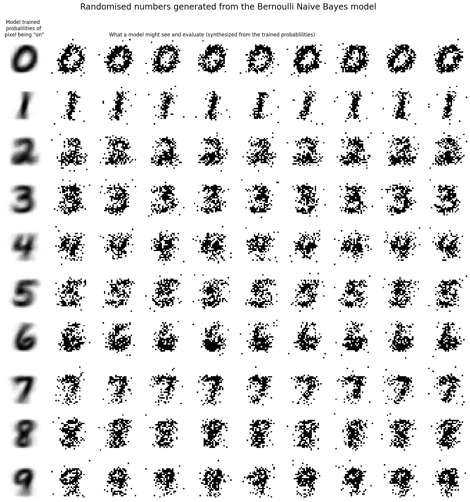

Pattern Recognition Breakthroughs
- Postal Address Recognition - Early neural networks deployed for real-world automation
- MNIST Dataset (1998) - 70,000 handwritten digits (28×28 pixels)
- Simple Neural Networks - Multilayer perceptrons with backpropagation
MNIST Dataset Structure
- 60,000 training images
- 10,000 test images
- 784 features per image (28×28)
- Grayscale values [0, 1]
These early systems proved that neural networks could solve real problems, setting the stage for deeper architectures.
How Naive Bayes "Sees" Digits
The model learns probability distributions P(pixel=1|digit) for each of 784 pixels per digit class.

Left column: Model's learned probability maps (blurred/spread out)
Other columns: Generated samples by sampling from probabilities
Source: Project 2, Q5 - Generative model visualization
Dive deeper into MNIST experiments